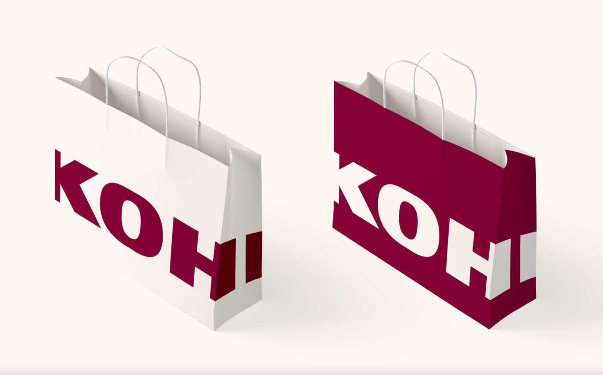

Brand Identity
Color System
Typography
Logo Applications
Layout System
Kohl's needed a comprehensive brand refresh with two primary objectives: strengthening the existing wordmark through more intentional implementation, and establishing a consistent primary color across digital and physical platforms.
The result introduced "Berry" as the signature brand color, GT America as the typographic system, and a layout structure inspired by the logo's form injecting energy while protecting existing brand equity.
